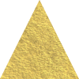
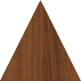

The Unic
Trouve & Double-Tap sur l'Unic !
Voici le but du jeu :
Chaque motif sera représenté deux fois, dans deux formes distinctes appelées Doublons...
A l'Exception d'UN SEUL:
L'UNIQUE
à toi de le débusquer !
trouve-le et tape sur la forme qui contient l'Unique !
Tape à nouveau pour confirmer
Tip: Double-Tap directement sur l’Unic si tu es confiant!
Lorsque tu dévoiles un Unic, un Doublon disparaît, créant ainsi un nouvel Unic.
Oups, ce n'était pas l'Unic...
Si par erreur tu Double-Tap un Doublon au lieu de l'Unic, il se met à clignotter...
Pour réparer cela, Double-Tap sur son Doublon...
Flip des Doublons
Pour regagner du temps, tu peux réaliser un ""Flip"" en retournant un Doublon.
Il suffit de trouver 2 formes qui contiennent un motif identique : Tape sur la première, puis sur la seconde...
Si c'était bien un doublon, il est retourné et le chrono remonte !
Les flips sont le meilleur moyen de gagner... mais tu n'en as qu'un nombre limité par partie, alors utilise les bien !
Si tu n'en as plus : Active un booster de recharge !
Boosters
Il existe plusieurs types de boosters qui te seront très utiles
| Gel du Temps |
| Indice |
| Unic Bombe |
| Recharge de Flip |
Ils apparaîtront en bas du Plateau de Jeu et s'activent d'un simple Tap
Mode Zen
Pas de Chrono, pas de stress...
Débloqué avec 3 Packs
Mode Flip Folie
Flip aussi vite que tu peux !
Débloqué avec 4 Packs
La Différence ?!
Un stock de Flip Illimité!
Petit Bémol... un Chrono très très court... Imbattable même, à moins de Flip sans relâche tous les Doublons de la Zone, jusqu'à enfin discerner l'Unic
Car le But reste le même: Touver l'Unic !
Flip, Flip, Flip & Trouve l'Unic!